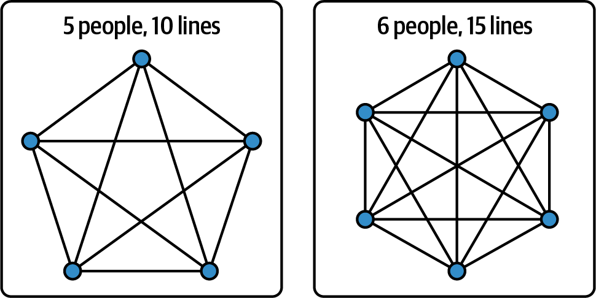
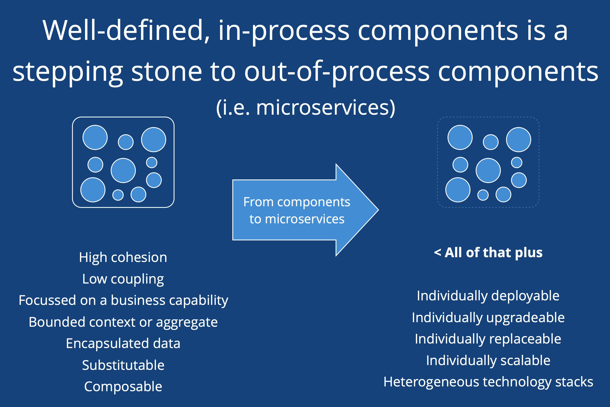

Microservices are now a mainstream architectural choice, but they are not the only viable option, and you shouldn’t adopt them by default. You need to take time to work out whether they are the right solution for you. That depends on you and the problems you are facing: what kind of organization are you, what technology do you have in place, and what skills do your teams have?
The answer to “why microservices?” should be “for business reasons.” That should be true of pretty much every technology decision we make—a decision should allow you to do something that matters to your business, whether directly (for example, allowing you to introduce new functionality more quickly) or indirectly (for example, through reducing risk or reducing cost).
Understanding what you are hoping to get out of adopting microservices is important because it helps you to prioritize those specific outcomes. It guides you on what measures you should be tracking, and it can tell you when you’ve “done enough.”
However, even if you have a problem that microservices can help with, you also need to look at whether you will be able to get the conditions in place to successfully adopt microservices. This is important because if you can’t make the necessary organizational and cultural changes to be successful, then you could end up in a worse position, with a more complicated architecture but without benefiting from being able to deliver better business outcomes to your organization.
Let’s start by discussing reasons you might move to microservices, before looking at the things you need to have in place to be able to make that move successfully.
Microservices are very often a solution to an organizational problem rather than a technical one. That organizational problem is often about enabling large numbers of people to work on the system effectively, in parallel. It can also be about developer experience, which is important in speeding up delivery of value—because developers don’t have to fight the process and the tooling—but also in recruiting and retaining people.
Having said that, there are also a number of technical reasons to choose microservices. Many of these were introduced in Chapter 1 as benefits of this architectural style; here I’ll be digging deeper into why each may lead you to decide that microservices are what you need. All these technical reasons result from the boundaries that a microservice architecture puts between different parts of the system. These boundaries mean that you can scale just part of the system, or implement auditing or compliance only where you are dealing with particular types of data. A failure can be limited to a single part, making the system more robust. You can deploy the different parts of your system independently, meaning you can move away from one big release and toward small releases when changes are ready. Finally, you can use different technologies for part of the system, ones that better fit the requirements.
Up to a point, adding new people to a team increases the productivity of the team. Different members will bring different skills, and there is more scope for people to work on the tasks that interest them and that they can do well. So a team of five is likely to be more effective than a team of two. But what about a team of 20?
I expect your intuition is that a team of 20 wouldn’t work. And that has to do with the nature of a software development team. People on a software development team don’t work independently; they make decisions together, and communicate about the work they are doing.
That communication becomes more of an overhead the more people you have on that team. For example, when you move from five to six people in a team, the number of lines of communication goes up by 50%, from 10 to 15 (see Figure 3-1).

Not every interaction in a team needs to happen 1-1, but plenty do. Think about a daily standup. If each person gives a 3-minute update, a 15-minute standup for a team of 5 becomes an hour for a team of 20.
And it’s not just about the time spent in communication. As a team gets bigger, there are more opportunities for miscommunication to occur, making it harder to maintain a common understanding of the purpose of the team, and easier to end up with people in the team who have different perspectives on how parts of the system work or what the outcome of a particular task should look like.
Research has shown there is also a tendency for individuals to slack off when working in groups. This “social loafing” effect may be related to feeling less personal responsibility for the output of the team as the team gets bigger, or to a feeling that your efforts just don’t matter.
The outcome of all these aspects is that you can’t keep adding people to a team and expect that team to continue to function effectively. Jeff Bezos famously introduced a two-pizza limit for teams at Amazon: if two pizzas aren’t enough to feed a team, the team is too big. This limit (let’s assume it’s four to six people, because it’s a pretty imprecise guideline) is supported by research by Neil Vidmar and Richard Hackman, where teams of various sizes were asked to complete a task then assess whether the team was too small or too large to achieve optimal results. The cross-over point where people were most satisfied with the size of the team was between four and five people.1
So, as the organization scales, you split into multiple teams. However, in a monolith, these teams are making changes to the same codebase. By default (i.e., unless you actively design your monolith to prevent it), that means it’s possible for code to directly access other parts of the codebase and even the database. This can result in changes made by one team having unexpected consequences for another team that was relying on something that the first team felt was an “internal detail” and therefore safe to change. Alternatively, you can have multiple teams making changes to the same shared files with the associated challenges of releasing those files: what happens when the first team to commit changes to the file isn’t ready to push the change live?2
Well, it slows you down. Accelerate’s research into what high-performing technology organizations have in common identified that these organizations have loosely coupled teams and architecture, so that things can change in one place without impacting the wider system.3
Loose coupling is about finding the things in your system that change at the same time and grouping them together. That means they can be changed independently of each other. Information is encapsulated inside those domains, with access only via a well-defined interface, which reduces the direct knowledge that different parts of the system have of one another.
Loose coupling means that teams can generally get their work done without having to coordinate with people outside their team. That doesn’t mean that there is no interaction between components: what you are aiming for is to have all access via a defined interface. This means that you got the boundaries right so that the interface for a component is stable and changes infrequently and that most change happens within a component owned by a single team.
For most people, the main reason to adopt microservices is the need to scale the organization. Done right, a microservice architecture is loosely coupled, and that loose coupling allows you to release small changes frequently.
Accelerate doesn’t advocate microservices, though; in fact, it says that what tools or technologies to use are the wrong questions to focus on. “What is important is enabling teams to make changes to their products or services without depending on other teams or systems.”4
As an alternative, also loosely coupled, you can opt to make your monolith more modular. I discuss this later in this chapter, and it can be a good option when you don’t have the conditions in place to make a success of a microservice architecture.
You want your technical stack to attract good people to work for you and to keep the good people already working for you. The impact of this on technical decisions shouldn’t be underestimated.
People are attracted by the technology they will get to use and learn, but also by the culture of the organization. Is there space to be innovative? Will they find it easy to move on in a few years’ time with this tech on their resumé? You don’t want to do resumé-driven development, but equally, you don’t want to make it harder to recruit or retain people.5 In my view, many organizations adopt technology around microservices (for example, Kubernetes) too early because of this driver.
Microservices are now so widely used that for many people, it’s what they expect. Are people going to be hesitant to join an organization that has a large monolithic architecture with many teams working on it? Maybe.
Beyond the choice of technology and the signal that sends, there is the actual experience of working as a developer using this architecture. The clear separation of a microservice architecture into different domains can mean that it is easier for a new developer to get up to speed, because they don’t need to understand the whole system, just the part they are working on. That goes for supporting the application too. It should take much less time to learn how to support a small application than the whole of a monolith.
The local developer experience should be smoother than working on a monolithic application. You should not have to spin up the whole system on your laptop to work on a particular service. That means a shorter development cycle time of code, run, test, because it should take only seconds to compile and restart your application and to run the automated tests just for that service. You may not even need to do local development anymore with the rise of cloud development environments, already widely used in big tech companies.6
For many developers, the autonomy a microservice architecture gives them is also a major attraction, because it greatly reduces the amount of time they spend waiting for someone else to take an action. If you are used to doing a release once a month, being able to do a release in minutes is a significant benefit.
A caveat, though. It’s easy to get microservices wrong and end up with a worse developer experience. This can be due to a lack of tooling or inconsistencies in how things are done from team to team, or it can be due to trying to work in ways that don’t really make much sense in a microservice architecture. A simple example, already mentioned in Chapter 2, is when I first built microservices, we implemented an end-to-end acceptance test suite. It was very hard to maintain because data fixtures needed to be set up in multiple services. It coupled all our services together, and it slowed down development drastically. One developer made a change to business functionality that took half an hour. It then took over a week to fix all the acceptance tests because of the coupling and bad structure.
This is related to the challenge I mentioned in Chapter 1. The developer experience in microservices is different, and if you don’t adapt the ways you work, you could struggle.
While securing microservices can be a challenge, because there are so many potential entry points into your system and because data is being sent over the network far more, they also allow you to separate out the parts of your system that handle sensitive data, or that have particular compliance requirements.
This can be, for example, payments or PII. Segregating this information to a single data store, accessed by a single service, can make it a lot easier to make sure you are complying with requirements like the Payment Card Industry (PCI) standards or General Data Protection Regulation (GDPR).
The teams working on the service will need expertise in these requirements—for example, understanding what they can log without concern versus places where they need to log to somewhere that most people can’t access—but other developers won’t. They are protected by the boundaries put in place between these services and the rest of the system.
Of course, to benefit from this, you need careful design and implementation. It’s all too easy to find that your PII data is not quite as locked down as you thought; for example, there’s no point having access to subscriber information in logs locked down for your log aggregation tool if someone has also sent those logs to a distributed tracing or error tracking system that doesn’t lock down access!
With a monolith, if you need to scale, you have to scale the whole thing.
With microservices, you can scale just the parts that need to be scaled. You can also run different services on different hardware, optimizing for the characteristics of that service—for example, whether it is I/O bound or CPU bound. And finally, if you have some parts of your system that are only needed at specific times, you can scale them right down or even turn them off.
All of these options can save you money and increase performance. This kind of scaling is a key reason that companies like Google and Netflix use microservices (it may be less relevant for companies operating at smaller scale).
Another advantage of a microservice architecture is that the application data is owned by individual services. That means each data store will contain less data, making it less likely that you will need to shard your database across multiple servers. Sharding makes things more complicated since you need to be able to route requests to the appropriate shard. Moving to microservices that each own their own data can avoid this complexity.
There is some nuance here. First of all, people do make the choice to use a single database to back up multiple microservices. This can be because it feels like overkill to have a database per service, although the example I have in mind is for the Content API team at the FT, where we had multiple services writing into the same graph database, because we needed our read microservices to be able to query across the graph of data. Whatever the reason, though, I think modeling which service owns which parts of the data is essential.
The other point is around the other types of data you have in a system: operational data like logs and metrics, analytics, or the data used for business reporting. These are generally all in a single database, with large volumes of data (far larger than in a monolith in many cases). Microservices do bring scale challenges!
As mentioned in Chapter 1, with a monolith, it’s hard to degrade gracefully. If something goes badly wrong, your whole system will be unavailable. With microservices, you can design your system so that losing one service doesn’t affect the rest of the system. This can involve failing back to a simpler solution. For example, let’s imagine an online book store. If you can’t access information that allows you to show someone a personalized list of recommendations, you can show a list of the most popular items instead.
This does take effort, because you need to decide what to do in case of partial failure. But it also means that failure has a smaller blast radius.
Another thing that a microservice architecture allows is the ability to choose different levels of resilience for different parts of the system. With a monolith, if you need high availability, you need the whole monolith to be deployed in multiple availability zones and multiple regions. But with microservices, you can accept that some parts of the system are effectively “nice to haves”—which enables you to reduce cost and complexity by running those systems with a lot less redundancy. So that list of personalized recommendations might be a lot less important than the ability to search for a particular book.
Sometimes you find a part of your system that is quite different in its requirements. With microservices, you can choose different technologies for that domain much more easily.
To expand on my example from Chapter 1, when the FT had a monolithic Java app and a relational database for the content publishing platform, metadata had to be stored in that database. But metadata is a graph: an Author is linked to many Articles they have written. The Articles mention Organizations, which are linked to People—the CEO, the Founder, etc.
Graph databases offer much simpler support for queries that navigate that graph. Moving to a graph database for storing metadata, and a document store for storing articles, fit the data we had and the way we wanted to interact with it much better than using the same relational database for both.
Microservices also give you flexibility in testing out these new approaches. You can create a new service that writes to a new graph database alongside your existing service and database, and compare the two. To take another example from the FT, my team’s move from writing services in Java to writing them in Go started with writing the same new service in both languages and comparing them. We could then decide to start writing all new services in Go, without having to migrate the existing estate.
So, let’s say you have a compelling reason to adopt microservices. How can you have confidence that this will deliver the change you need?
In this section I want to go over a few questions to ask yourself about your organization and your context, before embarking on using a microservice architecture (whether this is a migration from an existing monolith or a new system built from scratch). If you don’t have these things in place already and can’t imagine introducing them, you could find microservices a challenge.
These are all positive changes in my experience, whatever architectural style you end up using! So I encourage you to think about what it would take to introduce them in your organization whether or not you ultimately move to microservices. I will talk a little about change management later in the chapter.
The first question is, how well do you understand your domain?
If you are building something new, you probably don’t yet have a deep understanding of the domain. That means you will struggle to identify the right boundaries between parts of the system. If you divide up your system now, there’s a high chance you’ll find you need to move things around later.
This is a good reason to start with a monolith. The early phases of any project tend to mean writing new functionality, which means less contention for making changes to the same code. You should make good progress to start with.
As you work on the monolith, you will start to see code that hangs together nicely and changes at the same time. Then, when you need to move away from that monolith, you will have a good idea of where to split out a service.
Many companies fund development work through projects. A feature or set of features to develop is identified, a team is put together and funded for a period of time, and once those features are complete, the project is “finished.” After that point, the system goes into maintenance mode, run by a maintenance team.
This doesn’t really work for a microservice architecture. The teams get to make decisions about the tech they use because they are going to support that tech in production. This is good for the quality of the system being built—you think differently when you are the team that might have to pay the price for a particular technology decision.
What it means for the organization is that you need to move to a product-focused approach.7 You form a team to build a product, and that team will own it throughout its lifetime. That doesn’t mean the team won’t change, or reduce in size. But it means that there is some continuity between the people making decisions and the people supporting the consequences.
This is a fairly big change, and it can be difficult for leadership to loosen control to the point where they are no longer defining what gets built, but instead setting direction and letting the team get on with it. Also, many people would like to think that there is minimal work involved in maintaining an existing product. That’s never really been true, but it is even less true with a microservice architecture: you need a continued investment in maintenance and support.
There are two things that can help “sell” the change. First, you should be able to make changes that people care about more quickly. And second, the change from project to product should mean more flexibility to meet the needs of stakeholders as they come to understand them, rather than those stakeholders needing to get everything they care about put into scope for a project up front. You need to prove this works though!
Microservices can require big organizational and cultural changes that take years to complete and affect the whole technology organization. You can’t do that without leadership support. Your leaders need to see the value of these changes, and they will need to advocate for them. When you change, for example, from funding projects to funding products, it affects the whole technology organization in terms of the processes for planning and the ways costs are allocated.
The changes you need to be successful with microservices can mean a change in role for many managers. If you move from aligning your teams to discipline, i.e., frontend, backend, and database, to having cross-functional teams, what does that mean for their manager? It can be worked out, but only by the technology leadership.
And microservices have a start-up cost. You will move slowly while you build necessary tooling, and develop a culture of long-term ownership and support. If your leadership isn’t bought in, there is a good chance you won’t get that time.
Make sure that your leaders understand the problems you are trying to address by moving to this architectural style, and the benefits and trade-offs.
Think about what metrics matter to your leadership, and how you will show the positive impact of a microservice architecture on those metrics. You do need to be willing to accept that microservices may not move those metrics that matter to them, and that should lead you to think carefully about whether this is the right time to adopt microservices.
Metrics can be a tricky area, and it’s something I’ll discuss in “Recommendations”.
You also need to be clear about additional costs that might be associated with the move. For example, if development teams are now all supporting their own systems, you have to think about how you pay teams for doing that support, which could increase the out-of-hours support costs considerably. You may also need 10 times as many licenses for operational software that handles or escalates incidents, because they are needed for all engineers, not just operations teams.
If you move to microservices, you need each team to want to make its own decisions. That means the people on the team need to be comfortable with the freedom that being given a desired outcome rather than a prescriptive plan gives, and to engage with the wider business context so they can understand which options will move them toward that desired outcome.
Likewise, if your teams just want to write code and don’t want to think about operational concerns or infrastructure at all, moving to microservices is likely not going to work out.
Over time, you can shape your teams through turnover and recruiting for experience and interest in microservices, and you can support people currently in the teams to feel more comfortable with new responsibilities.
Do you have a change advisory board (CAB) that signs off on releases to production? Can a developer spin up infrastructure or do they need to raise a ticket and wait for a central team to approve it?
A CAB feels like something that will make it less likely to have a problem in production, but research shows that isn’t the case.8 All it really does is slow things down.
Having a central team in control of the infrastructure feels like it will keep a handle on costs and reduce risk from misconfiguration. But again, waiting for that team to do something slows people down. It is more effective to provide self-service tools that help people set things up right, and to review your estate to pick up on wasted resources.
Teams that handle infrastructure, operations, and other central concerns need a willingness to allow their customer teams to get on with things. This means adopting an enabling, self-service mindset where as much as possible, they remove “gates” that teams need to get through.
Some of these changes will affect what people do, day-to-day. That makes this difficult and emotional. However, if you don’t make this change, you will struggle to truly benefit from adopting microservices.
If your organization still does lots of things manually, you aren’t yet in the right place for a move to microservices. Sort out the groundwork first. This means automation.
There are a few benchmarks to determine if your organization is technically mature enough for microservices. You should:
Be able to spin up a new service in a matter of minutes in an automated, repeatable, reliable way.
Be able to deploy via an automated pipeline that includes automated tests rather than manual regression testing.
Have tools and processes in place to effectively monitor the health of your servers and your applications.
These are all changes that will provide value to your organization, whether or not you move to microservices afterwards.
Note: you don’t have to introduce these things for all existing systems. You can extract a single service and start by automating deployment and introducing observability. However, if your organization can’t make these changes even for new services, either because of culture or technology, then you likely aren’t in a good place to adopt microservices.
Maybe you don’t have the conditions in place to be successful—yet. So how can you influence your organization to change?
Change management is a huge topic and is not in scope for this book, not least because I am not an expert! However, I do have a few comments specifically about managing a move to a microservice architecture, which I see as being as much an organizational and cultural change as a technical one, precisely because of what needs to be in place to be successful.
First up, it is easier to try something out for small groups and for a limited period. Find a group of like-minded people, and run a project to extract a service, or to automate server provisioning, or to introduce continuous delivery.9 See whether you get the benefits you were hoping for. A good reason to extract a service might be where it has different requirements, or where you want to try out something new on a small scale, such as a different database or even programming language.
Sometimes, this is about finding a way to work around processes that slow you down. When I joined the FT in 2011 we had a CAB and would agree up front on when code could be released to our test and then production environments. But we had a third party that built key parts of our estate, and they didn’t have to follow the same process. When our stakeholders asked why that third party could get things done more quickly, it opened up a conversation about how comfortable the stakeholders were with trusting development teams to decide when to release changes. Soon, we moved away from a CAB, instead tracking all changes made and handing responsibility to teams to choose when to do them.
Also, accept that not everyone will respond in the same way to a big change, such as a move to microservices and the related change in responsibilities. You will probably find that you have some keen adopters, some refusers, and some in the middle, both for whole teams and for individuals. Work with those who are keen, provide as much information and reassurance as you can for those in the middle, and accept that for some people, this will be a reason to move on. You have a chance through natural turnover and recruitment to shape your teams over time. This is an area where that leadership support is important, because your leaders are the ones who can be clear on what you are doing as an organization and why.
Unless you have compelling reasons to adopt microservices and can get the conditions in place to be successful, be wary.
There are many advantages of building a monolith, or at least of building a monolith first. For example, they are a lot simpler to operate and to understand. And you can invest in making changes to the monolith to tackle those big challenges that tend to make people look toward microservices.
Specifically, you can address the challenges of scaling your organization and with developer experience by building a modular monolith, one where the code is structured into domains with clearly defined boundaries.
And you can address different requirements for parts of the system by splitting out parts of the monolith, without going further into a microservices approach. This will allow you to support different levels of required compliance, security, and redundancy, and to use different technologies if those are necessary.
I will talk more about both of these in the following section, but first, I want to briefly talk about how you can deal with moving to zero-downtime deployments in a monolith.
The ability to do a zero-downtime deployment transforms your ability to deliver value, whatever the architecture. That’s because it lets you move toward releasing on demand, and that lets you start to improve on the DORA metrics: specifically, lowering the lead time between committing code and releasing it, and allowing a higher deployment frequency.
To be able to do a zero-downtime deployment, you need automated deployment pipelines, containing automated tests. This allows for quicker and reliably repeatable deployments. This is something you can do with your monolith.
With a monolith, though, “quicker” still might not be particularly quick. Running every automated test for a large system can take a significant amount of time. You might find you have more changes happening than can each run through the pipeline in a day, in which case you will need to batch together more than one change, and have multiple changes going through the pipeline together. That does mean working out what happens to later deployments if a deployment fails. This can be complicated—but is it more complicated than supporting a distributed system architecture?
Once you have continuous delivery working smoothly, the next thing you need is to be able to deploy code to a server that is not handling traffic (blue-green deployment). Once a deployment is complete, you can move traffic over to the new version. Generally, you want to do this gradually so you can find out about a broken release before it impacts more than a small percentage of your users. Again, this is possible for a monolith as it is for microservices.
The most complicated aspect is generally the database. Keeping two databases in sync isn’t easy, and often the blue and green environments in fact share a database. This means database changes need to be backward compatible. For example, don’t drop a table or a column until you know you do not need to back out the code change that meant it wasn’t needed anymore. This is definitely more complicated when you have a single database that contains all your data than when you have microservices that own their own data, but it is easier when each individual change is relatively small than in the days where a deployment contained weeks of schema and data changes.
Microservices are not the only loosely coupled architecture. One alternative is to break up your monolith into logical modules. This is the approach taken by Shopify, and it has proven very successful for the organization.
In this model, the code still lives in a single repository and is deployed as a single deployment unit through a single build and deployment pipeline, but it is split into components that map to different domains, and the boundaries between those domains are specified carefully, although probably not enforced.
Sticking with a single deployment artifact does reduce your flexibility. Examples of this are to treat parts of the system in different ways because they have specific security or performance requirements, or to use different technologies for different parts of your system—particularly things like different programming languages. Personally though, I’m not super convinced of the value of multiple programming languages being supported for services operating in the same part of the stack, i.e., backend services. You can still use different data stores from within the monolith, for example a graph versus a document store, and you can certainly split your monolith to satisfy different requirements, without moving to a fully distributed microservices solution.
The challenges you will encounter in order to successfully design a modular monolith are very similar to those faced in order to successfully design a microservice-based system. Can you identify business-focused domains where you have low coupling between the domains and high cohesion within them? Can you make that significant shift in thinking for the critical mass of developers so that modular design becomes the natural way to approach things?
If you can’t do that, you won’t succeed, whether you are modularizing the monolith or going for microservices. Architect and creator of the C4 model Simon Brown covered this well in his GOTO Berlin talk in 2018.13 But maintaining the boundaries requires more effort when the boundaries are within one codebase, because it’s harder to spot when you are crossing a boundary. You also need to allow time for refactoring as you grow to understand where the right boundaries actually are.
For both modular monoliths and microservices, modularization should lead you toward developing and testing against just your part of the overall system. You shouldn’t need to run all the tests—if you have managed to create loosely coupled components.
Once your code is ready to build and deploy, things feel pretty different between the two. Although you can use a monorepo with microservices, in my experience it is more common to have each microservice in its own repo, with its own tests. In general, a deployment will go through the build pipeline in minutes, and deployments (and releases, since releasing functionality can happen after deploying the code when you make use of feature flags and blue-green deployments) for different microservices should be so independent that no coordination is required. You really do deploy at will. It’s unusual to have deployments queued up on a particular service. If something goes wrong, you can generally either roll back to the previous version of the service or make a code change and roll forward to the fixed version: I saw this “roll forward” happen a lot at the Financial Times. It’s possible when the change is well understood and the fix is small, and the developer finds out there’s a problem while they are still in the codebase.14
With a modular monolith, you are deploying the full system each time, through a single build pipeline. If your pipeline includes a lot of end-to-end tests, which tend to be slow to execute, each run can take a long time—a former colleague told me about a startup with 12 developers where the build pipeline took more than 40 minutes to run. Because of this, it may make sense to group more than one change into a deployment. Shopify can include up to 16 pull requests (PRs) in a single deployment to production.
As you scale up, it’s pretty unlikely you can run all your tests for each deployment because it takes too long, even if you throw a lot of machines at the problem (at one point Shopify was running tests on more than 100 machines for each PR). Instead, you need to invest in ways to run a sensible subset of the tests: the ones that touch the code being changed in this release. You do often end up with deploys running through the process at the same time—think of this as like trains on a single track. If something goes wrong with a deployment, other trains have to wait.
There are ways to mitigate these challenges—for example, by running full sets of tests against PRs ahead of merging code. Also, by focusing on writing tests that run quickly, so that almost all your tests are unit tests rather than integration tests.
On the plus side, teams spend a lot less time setting up and maintaining build pipelines!
Once the code is running in production, it’s unquestionably easier to understand what’s happening with a modular monolith, because there are significantly fewer moving parts.
One thing to note, however, is that few monoliths are truly running in a nondistributed fashion, and that is because of other changes happening in how we build our systems.
With most software being delivered via a browser, it’s rare to have an application deployed on the same box it is being used from. Monoliths generally talk to their database over a network, clients access them over the network, and there are content delivery networks (CDNs) in the path too.
Also, the rise of the cloud and the volume of traffic many systems now need to handle means even monolithic applications are often running on many machines in parallel. As Brendan Burns says in Designing Distributed Systems (Sebastopol: O’Reilly, 2018): “Once upon a time, people wrote programs that ran on one machine and were also accessed from that machine. The world has changed. Now, nearly every application is a distributed system running on multiple machines and accessed by multiple users from all over the world.”
Alongside this, many recent developments in software engineering push us toward a distributed architecture with small components. These are things that allow development teams to focus on business value, and hand other responsibilities off so they are someone else’s problem (even though it may not feel like that if you are struggling to cope with all the things you now need to know about, beyond how to write code!). Let’s explore this further.
To be “cloud native” means taking advantage of the cloud rather than just treating it as a data center someone else runs. That means using the “value-added” stuff from the cloud providers rather than treating the cloud purely as self-service compute on demand.
And lots of this value-added stuff is something that comes in small pieces, that you compose together: a queue, a data store, functions as a service. These approaches push you toward very different ways of building a system; serverless really is a cloud-only pattern. Serverless has a lot of the same benefits and challenges as microservices because it also involves small components in a distributed system and in fact, you can just treat it as one deployment option for this type of architecture.
At the Financial Times we made use of many of the options available. We had microservices running on Heroku and AWS. One group used containers running on Kubernetes. And almost every team used AWS Lambdas, either acting as cron jobs or responding to events. It was a mix, and all of it was distributed.
We will see this sort of mix become more common as we allow autonomous teams to choose the most appropriate tools for the job, rather than mandating the use of a single common platform.
The rise of the cloud has also enabled software as a service (SaaS), where companies run software for you, accessed over the internet, usually for a subscription fee.
First, the cloud makes it easier for those SaaS companies, as they can scale to meet demand easily. But also, companies were cautious about giving up control of their applications—I can still remember discussions about why no one would want to run their code in the public cloud, and those discussions were happening not that long ago! However, once people have accepted that AWS is hosting their code, it’s a smaller step to using a third party who is also running on AWS.
Using SaaS providers means you can focus on the things that are differentiators for your business. I am not interested in building my own authorization framework, but actually, I’m also not particularly interested in running one built by someone else, if instead I can hand the whole thing off to a third party. But this means that a lot of your business flows are necessarily distributed, because at least some of the steps pass out to third parties.
Once you have learned how to handle that, the next steps toward microservices are less intimidating.
Given all the things I’ve discussed so far in this chapter, what would my advice be to an organization considering whether to move to microservices?
My advice varies depending on whether you are starting from scratch or replacing an existing monolith, and I will cover both in turn.
Whichever situation, consider that a microservice architecture is made up of many services, which means you are building and operating a distributed system with a lot of moving parts, and that can be complicated. Everything you have to do—for example, upgrading a dependency, or adding a security scanning tool into a build pipeline—now has to be done multiple times, once for each service. And rather than having calls between functions in the same running application, you are going over the network, with all the flakiness and latency that entails.
The benefits can outweigh the costs, but only if you invest in the tools and processes you need, and make sure your organization is set up to allow you to work effectively. This is a nontrivial change: it will likely take years to complete, although you should see a positive impact much earlier than that.
If you are building something from scratch, I would tell you to start with monolithic systems (you may need more than one: even in the age of monolithic systems the organizations I worked in had several quite separate monoliths). First, you don’t know whether you need microservices. Why pay the “microservices tax”—the work it takes to provide tools to build, deploy, and operate multiple services—until you know whether you’re building something people are going to use?15
Second, you don’t yet have a full understanding of your domain. You are very unlikely to be able to work out the right boundaries between services until you have had a chance to see what parts of the system change together and what parts seem very independent of each other.
Finally, you are unlikely to successfully build a microservice architecture from scratch because it’s too complex. You need to start with something simpler.
Gall’s Law applies. “A complex system that works is invariably found to have evolved from a simple system that worked. A complex system designed from scratch never works and cannot be patched up to make it work. You have to start over with a working simple system.”16
So, start with a monolith. As you grow your codebase and/or your team, look out for when you start to slow down and find you get in each other’s way. At that point, it’s time to do something to fix this. By then, it is likely to be clear where you have parts of that monolith that hang together coherently and could be extracted out, either within the monolith or as separate services.
It is advisable to have a modular architecture for a modern software system once you have more than one team working on it: something with loose coupling and high cohesion, where you can release small changes regularly. Many of the benefits of a microservice architecture arise from defining component boundaries well. You will see these same benefits with a modular monolith (see Figure 3-2).

Building a modular monolith might work for you, and if you don’t have the necessary things in place to make a success of microservices—for example, if your teams don’t want the responsibility of being fully autonomous or your leadership isn’t on board with what needs to happen—I would stick there.
However, and this may not surprise you given I’m writing a book about microservices, I would definitely consider taking the next step and moving these modules into separate processes.
With a modular monolith, you end up with a lot of complexity in the build and deployment process. It’s hard to make sure you can release code quickly and with a high degree of confidence. It’s also much harder to maintain boundaries between modules through consensus within a monolith than it is where services are built and deployed separately. It’s too easy for developers to make decisions for the short term that break the boundaries (true Tech Debt as defined by Ward Cunningham, in that you take it on knowing that you will be paying interest on it until you go back and fix it).
It is a lot easier now to build and operate a distributed system than it was when we first started building microservices at the FT. There is over a decade of experience to draw on, and many more tools that can help. But even in 2015, you could build successful microservices-based systems. We built three at the same time at the FT!
I’d certainly start with fairly coarse-grained services, to minimize the overhead of running them all and to minimize the chance that you have to deal with data changes across services. Sam Newman describes the Strangler Fig pattern17 in Chapter 5 of his book Monolith to Microservices. It’s useful because your new system grows up around the old system, which acts as a support structure until the new system can stand on its own. You can extract a single service, see what benefits that brings, then go back and do another. Stop when you no longer get the value, or keep going until there is no monolith left.
I would also aim for the least possible amount of additional technology while in the early stages of implementing a microservice architecture. You want to minimize the up-front setup costs, and setting up a Kubernetes platform—or learning about Kubernetes, if you choose a platform run by someone else—is likely to be quite an investment.
If you are running in the cloud, I would aim to outsource as much effort to your cloud provider as possible. Package your application up as a container image and have those run for you.
I would also take a good look at whether serverless solutions would work for you. Adrian Cockcroft pioneered the use of microservices when he was at Netflix. Now his advice is to look at serverless first, using serverless functions to glue together all the really reliable long-running services that cloud providers already offer, such as databases and message queues.
I would probably use a container for anything that has a consistent workload, and anything where latency matters. I would definitely look at function as a service for any code that needs to respond to an event—for example, a file being written somewhere.
Almost everything I’m going to say in this book applies to any distributed system made up of small services, whether those are long-running containers or short-running serverless functions. Though these days, it feels like things are converging a bit. As an example, AWS now supports deploying lambda functions as container images, allowing you to use a consistent set of tools across both, and choose to deploy containers or functions, whichever meets your need, and GCP Cloud Run is serverless18 that you can deploy containers to.
Metrics in general can be a difficult area. Many metrics around developer productivity, for example, are pretty flawed: as soon as a measure becomes a target, it will be gamed;19 and any measure that looks at individual performance rather than the team is likely to reduce the effectiveness of the team as a whole, as people focus on making sure they have good numbers, rather than—for example—supporting others within the team to achieve the business outcomes. As Kent Beck and Gergely Orosz write in their response to a proposed developer productivity measurement framework from McKinsey, measuring effort and output is easier, but measuring outcome and impact is better.20
Personally, I find the DORA metrics are very useful if you are starting from low scores. You can track the impact of introducing automated build pipelines, removing change advisory processes, etc. Once you hit high performance on the DORA metrics, the one that begins to matter the most for developer productivity is deployment frequency, because as you can reduce toil and get developers focused on value, you should see that changing while the other metrics stay pretty much the same.
The SPACE framework, discussed in detail in Chapter 7, considers five separate dimensions of developer productivity: satisfaction and well-being, performance, activity, communication and collaboration, and efficiency and flow. The authors of the SPACE framework are clear that developer productivity can’t be reduced to a single metric, shouldn’t be about activity rather than outcomes, and is about the team rather than the individual. It takes more work to develop and track developer productivity guided by the SPACE framework, because you need to design a set of complementary metrics that track multiple dimensions, but you are more likely to get a realistic understanding of the impact of changes you make on developer productivity.
Any architectural choice is a trade-off. Microservices can be complicated to build and operate, but they solve particular problems very well:
Scaling your organization while maintaining the ability to move fast
Enhancing developer experience through quicker onboarding, a more rapid development cycle, and a faster release into production
Allowing you to isolate compliance and security requirements
Scaling just those parts of the system that need to be scaled
Keeping the blast radius for an issue smaller, increasing the resilience of your system
Letting you choose different technology for parts of your system, based on differing requirements, for example, having a graph database for data that is graph-like
Even where you have these challenges, you should make sure you have the conditions in place to be successful with a microservice architecture:
Understanding your business, because if you don’t yet understand it, you won’t be able to identify the right boundaries
Long-term funding for products, allowing services to be owned, rather than short-term funding for projects that then need to be handed over to some other team
High-level support for making the change, because it’s a cultural change, not a technology one
Teams that want autonomy, and enabling teams that will support them with that, because you need people who will take responsibility for the services they build
A high level of technical maturity around automation and infrastructure as code, because you can’t set up servers and release code by hand when you’re doing this frequently
Notice that there is nothing here about particular technologies. In fact, I strongly recommend avoiding introducing too many new technologies when getting started with microservices.21
You should definitely start something new with a monolith. When you find things slowing down, you should look to make your architecture more modular, whether that is within the monolith or by extracting microservices. But the world of software is moving in the direction of distributed components within an architecture, both through the use of cloud provider managed services and SaaS options. Even a monolith likely makes calls over networks, so you should get comfortable with distributed architectures.
I like the firmer boundaries you get with a microservice architecture over a modular monolith. It constrains what people can get wrong! Once you have multiple teams working on a system, microservices would be my choice, although I would start with fairly coarse-grained services.
If you do decide to go ahead with microservices—or already have—I have a lot of suggestions about how to make a success of that. In Part III of the book, I focus on the technological aspects. But first—and more importantly—in Part II, we will talk about the necessary changes in organizational structure and culture.
1 Discussed in Richard Hackman’s book Leading Teams (Boston: Harvard Business Review Press, 2002).
2 I have worked on quite a few monoliths where the architecture could best be described as a “Big Ball of Mud”: haphazard, sprawling, and the result of pressure to build new functionality without the time to structure the code “properly.”
3 Nicole Forsgren, Jez Humble, and Gene Kim, Accelerate: The Science of Building and Scaling High Performing Technology Organizations (Portland, OR: IT Revolution, 2018).
4 From Accelerate’s chapter on Architecture.
5 In the UK, resumé-driven development is known as CV++!
6 See, for example, the blog post “The End of Localhost”.
7 As advocated in Mik Kersten’s Project to Product (Portland, OR: IT Revolution, 2018).
8 This is covered in Chapter 7 of Accelerate, and there is also a really interesting review on Implementing Technology Change carried out by the UK’s Financial Conduct Authority in 2021 that concluded that CABs reject very few changes and likely perform more of a “flight control” than quality assurance function.
9 If you can’t find a group of like-minded people, or get permission to run a trial like this, it’s extremely unlikely you’ll be able to make microservices work in your organization.
10 I also recommend Kirsten’s 2022 Craft Conference talk, Deconstructing the Monolith.
11 Former Staff Software Developer at Shopify. Thanks, Philip, for your input to this section!
12 Really interesting when people publicly reflect on how things have gone; I wish more people did it. I really want to know what the impact is many years in.
13 Simon Brown, “Modular Monoliths”, GOTO Berlin 2018.
14 When my team first moved to containers, our handwritten container orchestration system did not support rolling back. If we wanted to revert code, we’d build a new release with the code reverted back to an earlier state. This was not generally a problem for us.
15 This is Martin Fowler’s Design Stamina Hypothesis. Until you have built enough features to find out whether you have product market fit, who cares how well designed your system is? Once you know you have a successful system, it’s time to invest in intentional design.
16 Of course, you can also build a simple system that doesn’t work!
17 First captured by Martin Fowler.
18 In that it is pay per use and fully managed for you.
19 This is Goodhart’s Law: “When a measure becomes a target, it ceases to be a good measure.”
20 McKinsey’s article “Yes, You Can Measure Software Productivity,” published in August 2023, includes both DORA and SPACE metrics, but adds a set of “opportunity-focused” metrics that largely focus on individuals and outputs. For a more detailed critique, see Kent and Gergely’s analysis via Gergely’s newsletter.
21 Yes, this is about not jumping straight into setting up Kubernetes, service meshes, and API gateways. Wait until you need these things!